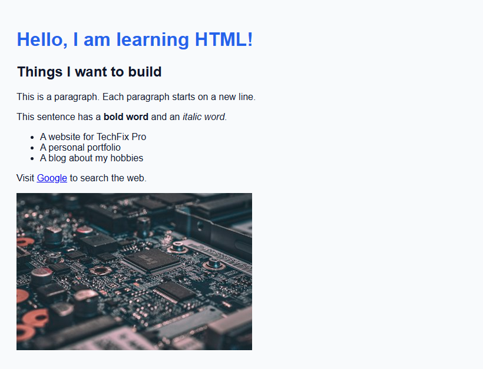
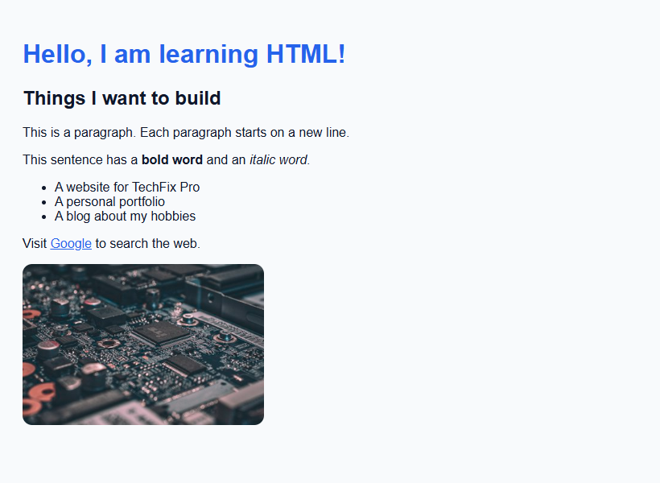
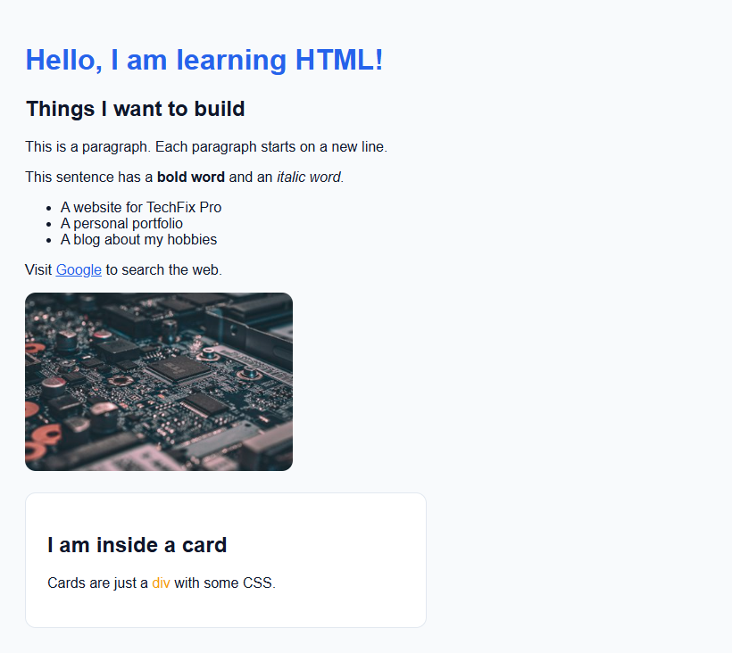

Lesson 3 · Getting Started
CSS Basics
CSS (Cascading Style Sheets) controls how HTML looks. In this lesson you will write your first stylesheet, link it to a page, and learn the core ideas that every later lesson relies on: selectors, properties, colours, units and the box model.
- About 75 minutes
- Creates:
practice/style.css - Edits:
practice/hello.html
By the end of this lesson you will be able to
- Read and write a CSS rule.
- Link a CSS file to an HTML page.
- Target elements with element, class and id selectors.
- Use colours, units (
px,rem,%,vh) and the box model. - Use
:hoverand the browser's Developer Tools.
Anatomy of a CSS rule
A CSS file is a list of rules. Each rule says which elements to style and how:
- The selector picks which HTML elements the rule applies to (here, every
<h1>). - Inside the curly braces
{ }go declarations: a property, a colon:, a value, and a semicolon;.
The #1 CSS mistake
Forgetting a semicolon ; or a closing brace }. When that happens, the browser silently ignores the broken declaration — and sometimes everything after it. If a style “does nothing”, check the punctuation first.
Three places CSS can live
TechFix Pro uses all three, so it is worth knowing each one:
| Where | How it looks | When TechFix Pro uses it |
|---|---|---|
External stylesheet (a separate .css file) | <link rel="stylesheet" href="styles.css"> in the <head> | Styles shared by every page: colours, buttons, navbar, footer. One file → change it once, every page updates. |
Internal stylesheet (a <style> tag) | <style> … </style> in the <head> | Styles used on one page only, like the Home page's hero. |
Inline style (a style attribute) | <a style="width:100%"> | A tiny one-off tweak to a single element. Use sparingly. |
Create style.css and link it
In your practice folder, create a new file called style.css (leave it empty for now).
Open hello.html. Inside the <head>, on a new line directly below the <title> line, add:
<head>, below <title><link rel="stylesheet" href="style.css">rel="stylesheet" says “this is a stylesheet”, and href="style.css" is the path to the file. Because style.css is in the same folder as hello.html, the path is just its name.
Write your first rules
Open style.css and type:
/* My first stylesheet */
body {
font-family: Arial, sans-serif;
background-color: #f8fafc;
color: #0f172a;
padding: 20px;
}
h1 {
color: #2563eb;
}/* … */is a CSS comment.font-familylists fonts to try, in order.sans-serifis a fallback meaning “any font without little feet”.background-colorpaints the background;colorsets the text colour.padding: 20pxadds 20 pixels of space inside the edges of the page.
Save both files and look at the browser:

Nothing changed?
Then the CSS file is not linked. Check that the file is called exactly style.css, that it is in the same folder as hello.html, and that the href matches the file name letter for letter.
Style the image and links
Add these rules at the bottom of style.css:
style.cssimg {
width: 300px;
border-radius: 12px;
}
a {
color: #2563eb;
}
a:hover {
color: #f59e0b;
}border-radius rounds the corners. a:hover is a pseudo-class: it applies only while the mouse pointer is over the link. Hover over “Google” to see it turn amber.

Classes and ids
Styling every <p> the same is rarely what you want. To style specific elements, give them a class (or an id) in the HTML, then target that name in CSS.
In hello.html, add this just above </body>:
</body><div class="card">
<h2 id="special">I am inside a card</h2>
<p>Cards are just a <span class="highlight">div</span> with some CSS.</p>
</div>Then add to the bottom of style.css:
style.css.card {
background-color: white;
border: 1px solid #e2e8f0;
border-radius: 12px;
padding: 24px;
margin-top: 20px;
max-width: 400px;
}
.highlight {
color: #f59e0b;
}
#special {
font-weight: bold;
}| In HTML | In CSS | Rule of thumb |
|---|---|---|
class="card" | .card (starts with a dot) | Reusable — many elements can share a class. An element can have several: class="btn btn-primary". TechFix Pro uses classes for almost everything. |
id="special" | #special (starts with a hash) | Unique — only one element per page may have a given id. Used for links that jump to a spot on a page (and for the gallery lightbox in Lesson 17). |

Class names can be anything — but be descriptive
Use lowercase words joined with hyphens, describing what the thing is: service-card, hero-buttons, footer-grid. Never start with a number and never use spaces (a space separates two different classes).
More selectors you will meet
| Selector | Selects… | Example from TechFix Pro |
|---|---|---|
.a .b (space) | any .b that is inside an .a (a “descendant”) | .hero h1 — only the h1 inside the hero |
.a > .b | .b that is a direct child of .a | .nav-links > li |
.a, .b (comma) | both .a and .b (a group) | .services-grid, .news-grid { … } |
.a.b (no space) | an element that has both classes | .pricing-card.featured |
:hover | while the mouse is over it | .btn-primary:hover |
::before / ::after | an invisible extra “box” CSS can create before/after the content | The quote mark on testimonial cards |
* | every element | The reset at the top of styles.css |
:root | the <html> element | Where the colour variables live |
Colours
- Hex codes like
#2563eb— a#followed by 6 characters (red, green, blue in pairs). TechFix Pro's brand blue is#2563eb. - rgba() like
rgba(255, 255, 255, 0.92)— red, green, blue (0–255) plus alpha (transparency, 0 = invisible, 1 = solid). The navbar uses this to be almost white so the page shows faintly through it. - Gradients like
linear-gradient(135deg, #2563eb, #1d4ed8)— a smooth blend between colours at an angle.
Colour picker
In VS Code, hover over any colour value in a CSS file. A colour picker appears so you can choose a colour visually.
Units of size
| Unit | Means | Typical use |
|---|---|---|
px | pixels — tiny dots on the screen. Fixed size. | Borders, shadows, small fixed sizes (72px navbar height) |
rem | multiples of the browser's base font size (usually 16px). 1.5rem = 24px. | Font sizes and spacing. Scales if the user enlarges text. |
% | a percentage of the parent element | width: 100% |
vh / vw | 1% of the browser window's height / width | min-height: 100vh makes the hero fill the screen |
fr | a “fraction” of the free space in a CSS grid | grid-template-columns: 1fr 1fr (Lesson 8) |
The box model
Every element on a page is a rectangular box made of four layers. Understanding this is the key to controlling spacing:
.card {
margin-top: 20px; /* space ABOVE the card, outside it */
border: 1px solid #e2e8f0; /* width, style, colour */
padding: 24px; /* space between the border and the text */
max-width: 400px; /* never wider than 400px */
}
/* Shorthand: one value = all 4 sides; two values = top/bottom then left/right */
.example { padding: 1rem 2rem; margin: 0 auto; } /* "0 auto" centres a box horizontally */By default, width does not include padding and border, which makes maths confusing. TechFix Pro fixes this with box-sizing: border-box on every element (Lesson 5), so a 300px-wide box stays 300px wide no matter how much padding you add.
Block and inline elements
Block elements (<div>, <p>, <h1>, <section>…) start on a new line and stretch the full width. Inline elements (<a>, <span>, <strong>, <i>…) sit inside a line of text. You can change this with the display property — and in Lessons 5–9 you will meet the two most powerful values, display: flex and display: grid.
The “cascade”: which rule wins?
When two rules set the same property on the same element, the browser picks a winner:
- More specific wins. An id beats a class, and a class beats a plain tag.
.hero h1beatsh1. - If equally specific, the later rule wins. This is why we usually put general rules first and special cases (like media queries) at the bottom.
- Inline styles beat stylesheet rules.
Your best friend: Developer Tools
Every browser has built-in Developer Tools (DevTools). Right-click anything on a page and choose Inspect (or press F12). You will see:
- the HTML of the page on the left — hover a line to highlight that element;
- the CSS rules applying to it on the right — crossed-out rules are being overridden; a yellow warning triangle means a typo;
- a diagram of its box model (margin, border, padding).
You can even edit CSS values there to experiment — changes are temporary and vanish when you reload.
Checkpoint
Practice
- Give the card a light blue background (
#eff6ff) and make its border2pxwide and blue. - Add a
box-shadowto the card:box-shadow: 0 10px 20px rgba(0,0,0,0.1); - Using DevTools, find out how much padding the card has.
Show the answer to 1 and 2
.card rule to.card {
background-color: #eff6ff;
border: 2px solid #2563eb;
border-radius: 12px;
padding: 24px;
margin-top: 20px;
max-width: 400px;
box-shadow: 0 10px 20px rgba(0,0,0,0.1);
}You now know enough HTML and CSS to start the real project. In the next lesson you will set up the TechFix Pro folder and all of its files.